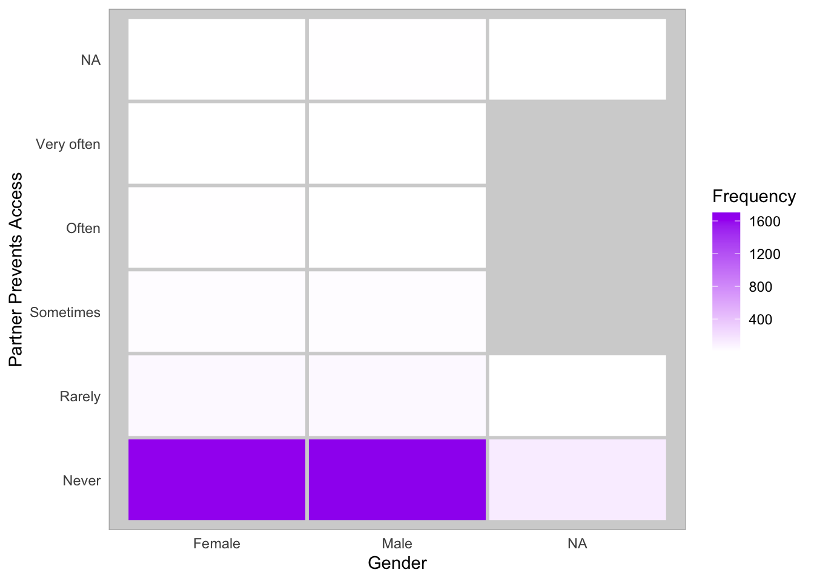

library(targets)
library(ordinal)
library(rempsyc)
library(flextable)
library(gtsummary)Analysis
I used NCHAT data to investigate differences in financial abuse between gender. Using only primary participants, I looked at item Q129D, which asked how often the person’s partner “Kept [them] from having access to a job, money, or financial resources.”
The following table breaks down responses given by cis men and women, as the data for transgender people did not indicate a gender (“transgender”, the only option to analyse, is not a gender).
tar_load(table)
tableGender | Partner Prevents Access | |||||
|---|---|---|---|---|---|---|
Never | Rarely | Sometimes | Often | Very often | NA | |
Female | 1,654 | 42 | 22 | 8 | 5 | 3 |
Male | 1,701 | 45 | 16 | 4 | 1 | 7 |
NA | 126 | 3 | 2 | |||
We can see that the overwhelming majority of participants of both genders indicate never being subject to financial abuse. The following plot make this stark similarity more obvious:
tar_load(plot)
plot
To formally analyze differences, I also ran an ordinal model predicting responses, whose coefficients are summarized next:
tar_load(summary)
summaryCharacteristic |
OR 1 |
95% CI 1 |
p-value |
|---|---|---|---|
| gender | |||
| Female | — | — | |
| Male | 0.83 | 0.59, 1.16 | 0.3 |
| 1
OR = Odds Ratio, CI = Confidence Interval |
|||
We find no statistical evidence for a difference between men and women (OR = 0.83, 95% CI [0.59, 1.16], p = .3).
Below, the default model summary provided by R.
tar_load(model)
summary(model)formula: fin_abuse ~ gender
data: data
link threshold nobs logLik AIC niter max.grad cond.H
logit flexible 3498 -738.97 1487.93 8(0) 1.75e-07 6.0e+01
Coefficients:
Estimate Std. Error z value Pr(>|z|)
genderMale -0.1888 0.1712 -1.103 0.27
Threshold coefficients:
Estimate Std. Error z value
Never|Rarely 3.0638 0.1166 26.28
Rarely|Sometimes 4.0270 0.1563 25.77
Sometimes|Often 5.1732 0.2492 20.76
Often|Very often 6.2754 0.4161 15.08
(141 observations deleted due to missingness)